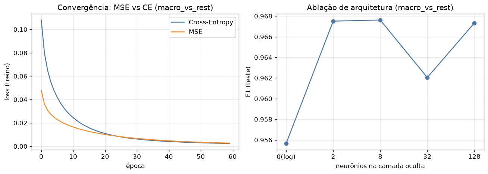
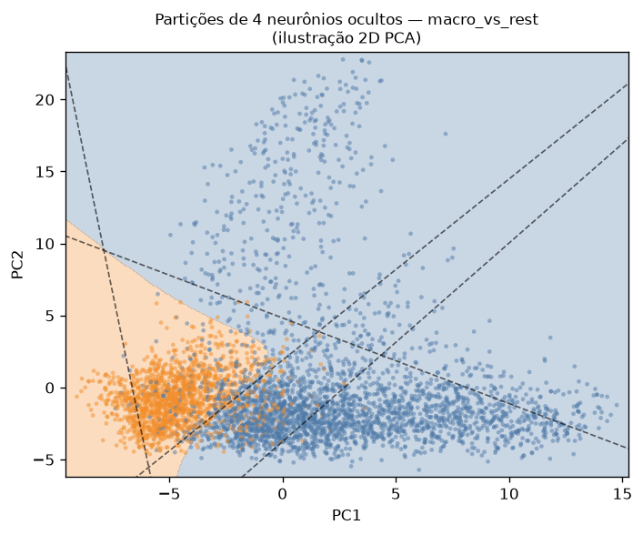

MLP construído do zero (numpy, backprop manual) para um problema real: classificação binária da coleção pessoal de imagens (features CLIP), em 3 tarefas. Desempenho medido em full-dim; o plano 2D (PCA) ilustra como os neurônios particionam o espaço.
forward + backprop na mão, sem framework
pessoa, screenshot×foto, macro-grupo
duas perdas comparadas
z = aᵀW + b
oculta: relu/tanh
saída: sigmoid → pBackprop manual: δ_saída = (p−y) (CE) ou 2(p−y)·p(1−p) (MSE); propaga com act'.
| Tarefa (full-dim) | Acc | F1 | base (acc) |
|---|---|---|---|
| macro_vs_rest | 0.976 | 0.965 | 0.654 |
| has_people | 0.963 | 0.885 | 0.836 |
| screenshot×foto | 0.924 | 0.751 | 0.844 |
Full-dim torna as 3 tarefas aprendíveis (no 2D PCA, screenshot tinha F1 0.29 — quase morta).

